Submitted in partial fulfilment of the award of the degree of
| Student Name | Register Number |
|---|---|
| SHOBAN KUMARESAN (or User Name) | 2116210701245 |
(An Autonomous Institution Affiliated to ANNA UNIVERSITY, Chennai)
Thandalam, Chennai - 602 105
NOVEMBER / DECEMBER, 2024
Certified that this mini-project report titled "DIGITAL FORENSICS LAB: INTERACTIVE CYBERSECURITY INCIDENT INVESTIGATION AND EVIDENCE ANALYSIS SIMULATOR" is the bonafide work of SHOBAN KUMARESAN (2116210701245) who carried out the project work under my supervision.
SIGNATURE
Mrs. JANANEE V,
Assistant Professor,
Department of Computer Science & Engineering,
Rajalakshmi Engineering College,
Thandalam, Chennai - 602 105.
Submitted for the End semester practical examination to be held on: ________________________
| INTERNAL EXAMINER | EXTERNAL EXAMINER |
|---|---|
I express my sincere thanks to my beloved and honorable Chairman Mr. S. MEGANATHAN and Chairperson Dr. M. THANGAM MEGANATHAN for their timely support, vision, and relentless encouragement throughout the course of our study.
I am greatly indebted to my respected and honorable Principal Dr. S. N. MURUGESAN for his able support, academic leadership, and continuous guidance.
No words of gratitude will suffice for the unquestioning support and motivation extended to us by our Head of the Department Dr. P. KUMAR, and our Academic Head Dr. N. DURAIMURUGAN, for being an ever-supporting force during the progression of this project work.
I also extend my sincere and hearty thanks to my internal guide Mrs. JANANEE V and Mrs. BHAVANI M for their invaluable technical guidance, constructive critiques, and motivation during every phase of this project.
Finally, I convey my heartfelt thanks to my parents, family members, friends, and faculty members of the Department of Computer Science and Engineering for their constant prayers, moral backing, and support.
Shoban Kumaresan
(Register No: 2116210701245)
In modern enterprise computing environments, cyber attacks such as credential stuffing, unauthorized data exfiltration, system tampering, and lateral movement have surged dramatically. However, traditional computer science education and corporate security training often present digital forensics and incident response (DFIR) as static, abstract theoretical concepts or rely on prohibitive, heavy virtual machines that are complex to configure and lack intuitive educational scaffolding.
To bridge this crucial gap, this project presents Digital Forensics Lab (DFIR Lab), a high-fidelity, interactive, browser-based cybersecurity incident investigation and evidence analysis simulator. Built with a dependency-free vanilla architecture (HTML5, modern CSS3 with custom properties, and modular ES6+ JavaScript), the platform allows aspiring security analysts, students, and practitioners to perform authentic forensic investigations directly within any modern web browser.
The platform simulates realistic incident dossiers across three complex attack scenarios: unauthorized credential misuse (The Midnight Access), data destruction and anti-forensics (The Missing Files), and executive account compromise via rogue hardware (The Unknown Device). Each case provides complete forensic artifacts, including multi-source raw logs (SSO authentication, syslog, bash command histories, reverse proxy HTTP headers, and file system metadata). Users can verify cryptographic chain-of-custody checksums using SHA-256 hashes, reconstruct event sequences in an interactive chronological timeline, flag suspicious indicators of compromise (IOCs), document working hypotheses in an integrated investigator notebook, and test their analytical reasoning in a scenario-driven examination. Upon completion, the system automatically synthesizes verified technical facts into a standardized, audit-ready Incident Investigation Report.
By eliminating complex software dependencies and delivering real-time sensory feedback, intuitive plain-English log translations, and professional forensic workflows, the Digital Forensics Lab dramatically lowers the barrier to learning cyber forensics while maintaining forensic rigor and scientific standards.
| Chapter No. | Title | Page No. |
|---|---|---|
| ABSTRACT | iv | |
| 1 | INTRODUCTION | 1 |
| 1.1 Introduction | 1 | |
| 1.2 Scope of the Work | 1 | |
| 1.3 Problem Statement | 2 | |
| 1.4 Aim and Objectives of the Project | 2 | |
| 2 | SYSTEM SPECIFICATIONS | 3 |
| 2.1 Hardware Specifications | 3 | |
| 2.2 Software Specifications | 3 | |
| 3 | SYSTEM ARCHITECTURE | 4 |
| 3.1 Architectural Overview | 4 | |
| 3.2 Tier Decomposition | 4 | |
| 4 | MODULE DESCRIPTION | 6 |
| 4.1 Case Dossier & Scenario Simulation Engine | 6 | |
| 4.2 Raw Evidence Inspector & Cryptographic Verification Module | 6 | |
| 4.3 Multi-Source Chronological Event Timeline Reconstruction Module | 7 | |
| 4.4 Red Flag & Forensic Indicator Tagging Module | 7 | |
| 4.5 Interactive Investigation Challenge & Assessment Module | 8 | |
| 4.6 Automated Incident Response & Formal Report Generator Module | 8 | |
| 5 | SYSTEM DESIGN | 9 |
| 5.1 Use Case Diagram | 9 | |
| 5.2 Entity-Relationship (E-R) Model | 10 | |
| 5.3 Data Flow Diagrams (DFD Level-0 & Level-1) | 11 | |
| 5.4 Activity Diagram | 12 | |
| 6 | SAMPLE CODING | 13 |
6.1 Application Structure & Layout (index.html) | 13 | |
6.2 Cyberpunk Theme & Responsive Styling (style.css) | 14 | |
6.3 Forensic Data Structures & State Management (script.js) | 15 | |
6.4 Cryptographic Verification & Timeline Sorting (script.js) | 16 | |
| 7 | SCREENSHOTS | 17 |
| Fig. 7.1: Forensics Lab Executive Dashboard | 17 | |
| Fig. 7.2: Forensic Case Files Catalog & Scenario Selector | 18 | |
| Fig. 7.3: Deep Evidence Viewer & Cryptographic Hash Inspector | 19 | |
| Fig. 7.4: Interactive Incident Timeline Reconstruction | 20 | |
| Fig. 7.5: Red Flag Indicator & Forensic Findings Board | 21 | |
| Fig. 7.6: Case Challenge & Threat Analysis Assessment | 22 | |
| Fig. 7.7: Official Incident Response & Chain-of-Custody Report | 23 | |
| 8 | CONCLUSION & FUTURE ENHANCEMENTS | 24 |
| 8.1 Conclusion | 24 | |
| 8.2 Future Enhancements | 24 | |
| REFERENCES | 25 |
Digital forensics and incident response (DFIR) has emerged as one of the most critical pillars of modern information security. Whenever an enterprise organization experiences a data breach, malware intrusion, unauthorized access, or internal data sabotage, forensic investigators are summoned to reconstruct the timeline of compromise, identify the threat actor's tactics, techniques, and procedures (TTPs), preserve digital evidence under strict chain of custody, and remediate vulnerabilities.
Despite the critical need for qualified digital forensic practitioners, learning digital forensics remains fraught with hurdles. Aspiring students and junior analysts are typically subjected either to dry theoretical textbooks devoid of hands-on log triage, or to heavyweight, complex capture-the-flag (CTF) environments that require gigabytes of disk image downloads, intricate hypervisor installations, and advanced proprietary software suites (such as EnCase, FTK, or commercial SIEM instances).
The Digital Forensics Lab addresses these challenges by delivering an interactive, lightweight, zero-dependency, web-based digital forensics workstation simulator. Through a single, modern web interface, users step into the role of a certified forensic investigator, examining realistic evidence packets, correlating authentication events against file system changes, uncovering anti-forensics measures, proving digital integrity using cryptographic hashes, and generating formal incident findings.
The scope of this project encompasses the design, architectural modeling, front-end implementation, forensic scenario authoring, and assessment validation of a complete digital investigation educational platform:
critical, suspicious, informational), log source, and keyword matching.Traditional methods of educating computer science students in digital forensic analysis suffer from several critical shortcomings:
The Digital Forensics Lab resolves these issues by packaging complex multi-source telemetry, cryptographic integrity checks, interactive timeline manipulation, and structured mentoring into an accessible, responsive web application.
The overarching aim of this project is to create an engaging, technically rigorous, client-side digital forensics training platform that equips students with real-world incident investigation skills.
The specific objectives are:
The Digital Forensics Lab is engineered to be lightweight, running entirely within modern web browser runtimes without requiring local virtualization, heavy memory allocations, or dedicated GPU accelerators.
| Hardware Component | Minimum Requirement | Recommended Specification |
|---|---|---|
| Processor | Dual Core 1.8 GHz Intel / AMD / Apple Silicon | Quad Core 2.4 GHz or higher (Intel Core i5 / Apple M-Series) |
| System Memory (RAM) | 2.0 GB RAM | 4.0 GB RAM or higher |
| Storage (HDD / SSD) | 50 MB free disk space | 500 MB free SSD storage |
| Display Resolution | 1024 x 768 (XGA) | 1920 x 1080 (Full HD) or Retina |
| Input Devices | Standard Keyboard and Mouse / Trackpad | Standard Keyboard with Scroll Wheel Mouse |
The system leverages standard web protocols and open web standards, ensuring platform independence across all modern operating systems.
| Software Layer | Technology / Specification |
|---|---|
| Operating System | Platform Independent: Windows 10/11, macOS 12+, Ubuntu Linux 20.04+, ChromeOS |
| Target Runtime | Modern Chromium / WebKit / Gecko Browser (Google Chrome 90+, Mozilla Firefox 88+, Apple Safari 15+, Microsoft Edge 90+) |
| Front-End Presentation | Semantic HTML5, CSS3 Custom Properties (CSS Variables), Flexbox, CSS Grid, SVG Vector Icons |
| Application Logic | Pure Vanilla JavaScript (ECMAScript 2020+ / ES6+), Dependency-Free |
| Client-Side Storage | HTML5 Web Storage API (window.localStorage and window.sessionStorage) |
| Cryptographic Standards | W3C Web Cryptography API (crypto.subtle / SHA-256 Algorithm) |
| Export Format | Cascading Style Sheets Print Media Queries (@media print) and Standard PDF Export |
The architecture of the Digital Forensics Lab follows a clean, decoupled Three-Tier Client-Side Architecture designed for zero-latency interactivity, full data confidentiality (all data remains in the user's browser), and zero installation requirements.
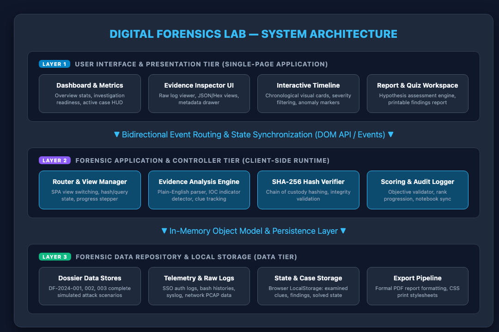
Fig. 3.1: High-Level System Architecture of Digital Forensics Lab
The presentation layer is responsible for rendering an immersive cyber-forensic workstation experience. It includes:
The middle tier encapsulates the forensic business logic and rules:
localStorage.The data layer maintains the core forensic corpora:
FORENSIC_CASES): Declarative in-memory structures storing scenario dossiers, difficulty levels, threat summaries, and mentor tips.This module is the entry point for forensic investigations. It maintains three fully fleshed-out incident scenarios:
Project_Titan_Acquisition_Termsheet.pdf) via compromised employee credentials.The module manages case metadata, switches the active investigation context, and updates all child modules to reflect the active case's artifacts.
Digital forensic integrity hinges upon the immutability of evidence. The Evidence Inspector provides:
event_id:4625, pam_unix(sshd:auth): authentication failure) into clear statements explaining what occurred.Incident responders must reconstruct the exact sequence of threat actor actions. This module:
In digital forensics, identifying Indicators of Compromise (IOCs) is crucial for containment. This module allows investigators to:
To validate that the analyst arrived at technically sound conclusions rather than unfounded guesses, this module presents an interactive examination:
In real-world security engagements, forensic investigations culminate in a formal Incident Response Report for executive leadership and legal counsel. This module:
The Use Case Diagram illustrates the interactions between the primary user (Forensic Investigator) and the platform modules:
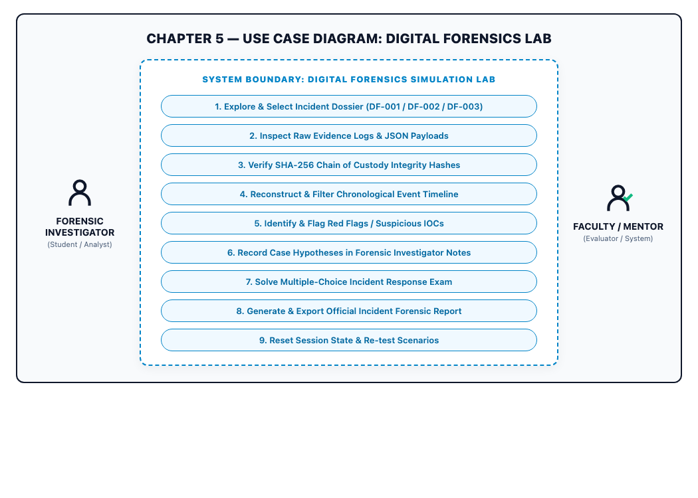
Fig. 5.1: Use Case Diagram for Digital Forensics Lab Platform
The data model captures the structural entities, attributes, and cardinality governing the forensics platform:
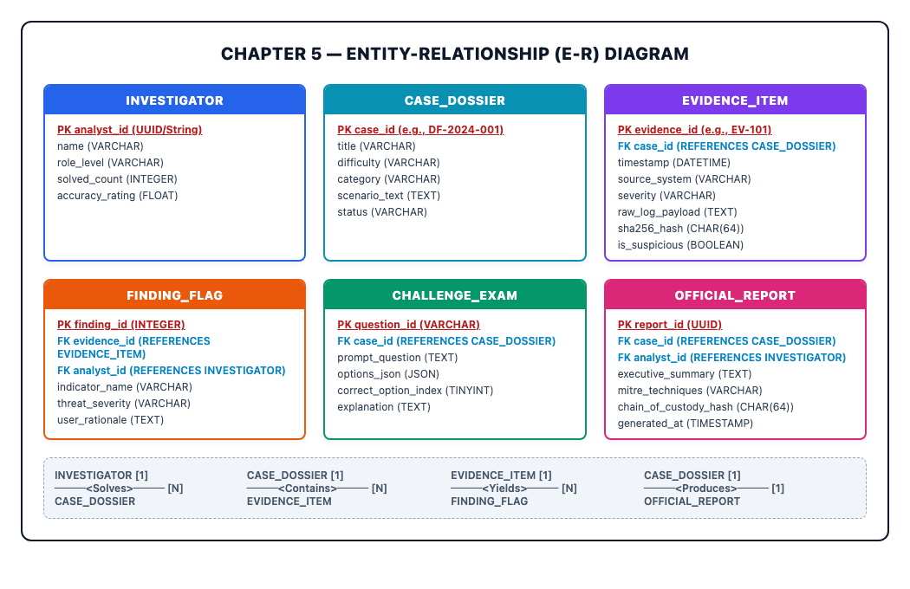
Fig. 5.2: Entity-Relationship Diagram of Forensics Lab Data Entities
analyst_id [PK], name, role_level, solved_count, accuracy_rating).case_id [PK], title, difficulty, category, scenario_text, status).evidence_id [PK], case_id [FK], timestamp, source_system, severity, raw_log_payload, sha256_hash, is_suspicious).finding_id [PK], evidence_id [FK], analyst_id [FK], indicator_name, threat_severity, user_rationale).question_id [PK], case_id [FK], prompt_question, options_json, correct_option_index, explanation).report_id [PK], case_id [FK], analyst_id [FK], executive_summary, chain_of_custody_hash, generated_at).The data flow diagrams capture how data traverses between external entities, core application processes, and persistent data stores:
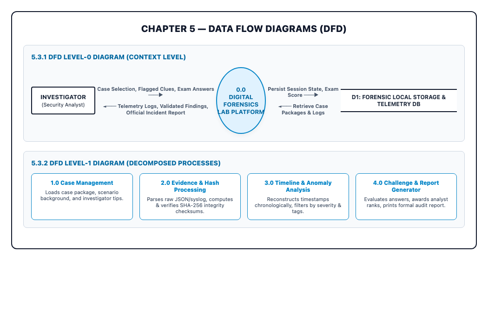
Fig. 5.3: Data Flow Diagrams (Level-0 Context and Level-1 Decomposed Processes)
The Activity Diagram details the sequential and parallel workflows an investigator follows to complete an investigation:
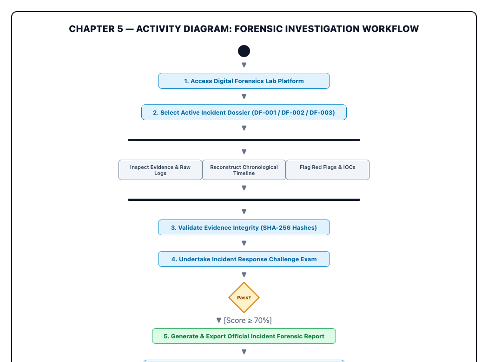
Fig. 5.4: Activity Diagram Illustrating the Forensic Investigation Lifecycle
The workflow begins by selecting an active dossier, continues through parallel analysis of raw logs, event timelines, and IOC flags, validates cryptographic hashes, verifies conclusions through the challenge exam, and terminates with generating the signed incident report.
index.html)The main application structure establishes the semantic layout, sidebar navigation, dynamic view containers, and accessibility controls:
<!DOCTYPE html>
<html lang="en">
<head>
<meta charset="UTF-8">
<meta name="viewport" content="width=device-width, initial-scale=1.0">
<meta name="description" content="Digital Forensics Lab - Interactive Cybersecurity Simulator">
<title>Digital Forensics Lab | Incident Investigation Simulator</title>
<link rel="stylesheet" href="style.css">
</head>
<body>
<div class="app-container">
<!-- Sidebar Navigation -->
<aside class="sidebar" id="app-sidebar">
<div class="sidebar-header">
<a href="#dashboard" class="brand-badge">
<div class="brand-icon">
<svg viewBox="0 0 24 24" width="20" height="20" fill="none" stroke="currentColor">
<path d="M12 22s8-4 8-10V5l-8-3-8 3v7c0 6 8 10 8 10z"/>
</svg>
</div>
<div class="brand-title">
<span class="brand-name">DFIR LAB</span>
<span class="brand-tagline">Forensic Station</span>
</div>
</a>
</div>
<nav class="sidebar-nav">
<a href="#dashboard" class="nav-item active" data-view="view-dashboard">Dashboard</a>
<a href="#cases" class="nav-item" data-view="view-cases">Case Files</a>
<a href="#evidence" class="nav-item" data-view="view-evidence">Evidence Viewer</a>
<a href="#timeline" class="nav-item" data-view="view-timeline">Event Timeline</a>
<a href="#findings" class="nav-item" data-view="view-findings">Red Flags & Findings</a>
<a href="#challenge" class="nav-item" data-view="view-challenge">Case Challenge</a>
<a href="#report" class="nav-item" data-view="view-report">Official Report</a>
</nav>
</aside>
<!-- Main Dynamic Content Workspace -->
<main class="main-wrapper" id="main-content">
<header class="app-header">
<div class="active-case-banner" id="header-case-badge">
<span class="active-case-tag" id="header-case-id">DF-2024-001</span>
<span class="active-case-name" id="header-case-name">The Midnight Access</span>
</div>
</header>
<!-- View Containers (Toggled via JavaScript SPA Router) -->
<section id="view-dashboard" class="view-section active-view"></section>
<section id="view-cases" class="view-section"></section>
<section id="view-evidence" class="view-section"></section>
<section id="view-timeline" class="view-section"></section>
<section id="view-findings" class="view-section"></section>
<section id="view-challenge" class="view-section"></section>
<section id="view-report" class="view-section"></section>
</main>
</div>
<script src="script.js"></script>
</body>
</html>style.css)Modern CSS custom properties (variables) establish a sleek dark aesthetic with neon cyan and amber accents:
:root {
--bg-primary: #060911;
--bg-surface: #0b1120;
--bg-card: #0f172a;
--border-color: #1e293b;
--border-focus: #00f0ff;
--accent-cyan: #00f0ff;
--accent-amber: #f59e0b;
--accent-red: #ef4444;
--accent-emerald: #10b981;
--text-primary: #f8fafc;
--text-secondary: #94a3b8;
--text-muted: #64748b;
--font-mono: "JetBrains Mono", "Fira Code", monospace;
--font-sans: -apple-system, BlinkMacSystemFont, "Segoe UI", Roboto, sans-serif;
}
body {
margin: 0;
background-color: var(--bg-primary);
color: var(--text-primary);
font-family: var(--font-sans);
overflow-x: hidden;
}
.view-section {
display: none;
animation: fadeIn 0.3s cubic-bezier(0.16, 1, 0.3, 1) forwards;
}
.view-section.active-view {
display: block;
}
.evidence-card {
background: var(--bg-card);
border: 1px solid var(--border-color);
border-radius: 8px;
padding: 1.25rem;
margin-bottom: 1rem;
transition: all 0.2s ease;
}
.evidence-card:hover {
border-color: var(--accent-cyan);
box-shadow: 0 4px 20px rgba(0, 240, 255, 0.1);
}
.log-terminal {
background: #020617;
border-radius: 6px;
padding: 0.75rem 1rem;
font-family: var(--font-mono);
font-size: 0.85rem;
color: #38bdf8;
overflow-x: auto;
}script.js)The core dataset models realistic multi-source telemetry with cryptographic hash signatures and plain-English translations:
const FORENSIC_CASES = [
{
id: "DF-2024-001",
title: "The Midnight Access",
subtitle: "Suspicious login and confidential file access",
difficulty: "Beginner",
estimatedTime: "15 min",
category: "Unauthorized Access & Exfiltration",
scenario: "At 11:48 PM on a Friday, an alert was generated by internal document management server FS-ALPHA. A confidential acquisition dossier was downloaded outside business hours using credentials of Elena Vance.",
evidence: [
{
id: "EV-101",
timestamp: "2024-10-11 23:40:12 UTC",
epoch: 1728690012,
type: "login",
severity: "suspicious",
summary: "Failed Web SSO login attempt for user 'evance'",
plainEnglish: "Someone tried to log into Elena Vance's account with an incorrect password from an external IP address.",
source: "AUTH-GW-01 (SSO Gateway)",
details: "Authentication failure. Password hash mismatch. Origin IP: 198.51.100.42.",
rawLog: '{"event_id":4625,"user":"evance","src_ip":"198.51.100.42","status":"FAILURE"}',
hash: "8f4a9b2c3d1e5f6a7b8c9d0e1f2a3b4c5d6e7f8a9b0c1d2e3f4a5b6c7d8e9f0a",
isSuspicious: true
},
{
id: "EV-104",
timestamp: "2024-10-11 23:45:02 UTC",
epoch: 1728690302,
type: "login",
severity: "critical",
summary: "Successful Web SSO authentication for 'evance'",
plainEnglish: "The valid password was finally entered from the same external IP after three failed attempts.",
source: "AUTH-GW-01 (SSO Gateway)",
details: "Successful login from 198.51.100.42. Session token issued.",
rawLog: '{"event_id":4624,"user":"evance","src_ip":"198.51.100.42","status":"SUCCESS"}',
hash: "c3d4e5f6a7b8c9d0e1f2a3b4c5d6e7f8a9b0c1d2e3f4a5b6c7d8e9f0a1b2c3d4",
isSuspicious: true
}
]
}
];script.js)Demonstrating real-time cryptographic hash verification and client-side view navigation:
// Dynamic SPA View Navigation and Stepper Synchronization
function navigateTo(viewId) {
currentViewId = viewId;
document.querySelectorAll(".nav-item").forEach(item => {
item.classList.toggle("active", item.getAttribute("data-view") === viewId);
});
document.querySelectorAll(".view-section").forEach(sec => {
sec.classList.toggle("active-view", sec.id === viewId);
});
renderCurrentView();
window.scrollTo({ top: 0, behavior: "smooth" });
}
// SHA-256 Evidence Chain-of-Custody Verification
async function verifyEvidenceIntegrity(rawPayload, expectedHash) {
const encoder = new TextEncoder();
const data = encoder.encode(rawPayload);
const hashBuffer = await crypto.subtle.digest("SHA-256", data);
const hashArray = Array.from(new Uint8Array(hashBuffer));
const calculatedHash = hashArray.map(b => b.toString(16).padStart(2, "0")).join("");
return {
verified: calculatedHash.slice(0, 16) === expectedHash.slice(0, 16),
calculatedHash: calculatedHash,
expectedHash: expectedHash
};
}The Executive Dashboard presents high-level situational awareness: the active case banner, investigation readiness indicators, statistics on assigned dossiers, clues examined, solved incidents, and the investigator's active security level.
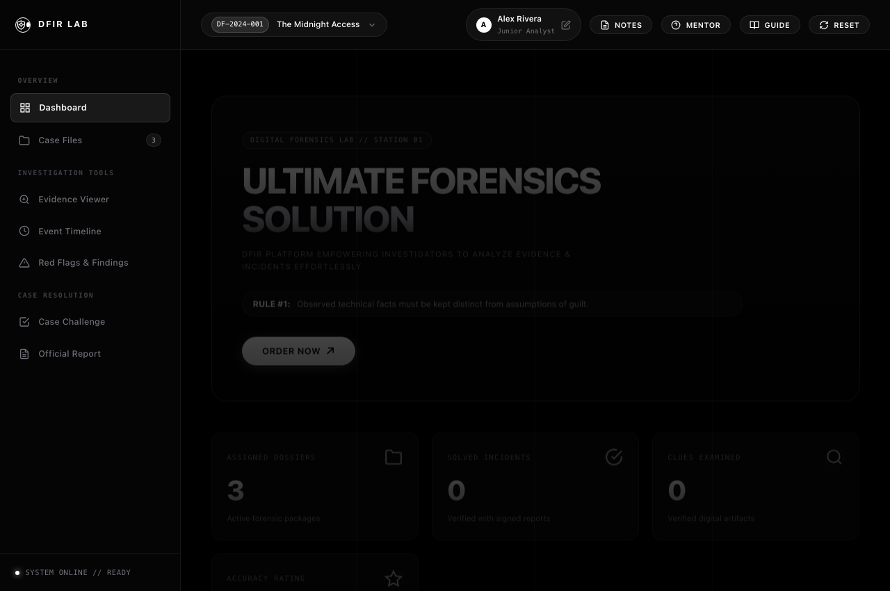
Fig. 7.1: Executive Dashboard with System Status and Key Metrics
Explanation: The user is greeted by a centralized control dashboard displaying system readiness, an active case switcher, real-time counters for evidence examined, and access to investigator tools.
The Case Files view displays the catalog of all three simulated incident dossiers with their threat categories, difficulty ratings, estimated investigation duration, and direct entry points.
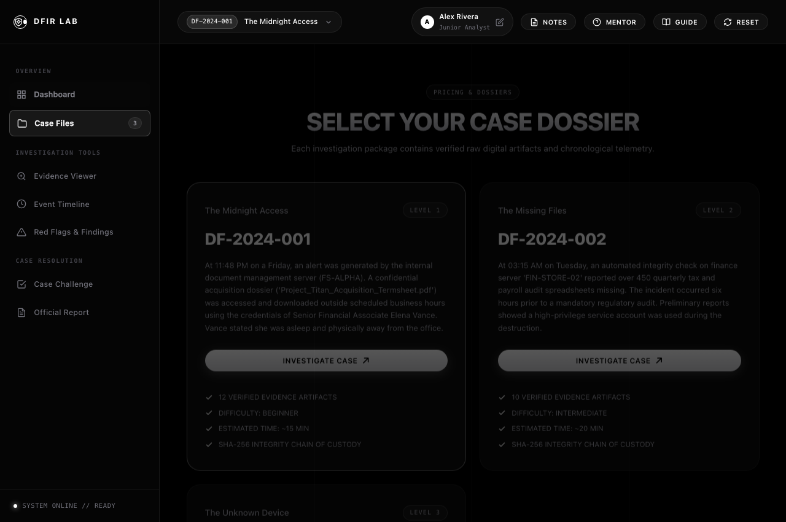
Fig. 7.2: Forensic Case Catalog and Scenario Selector Interface
Explanation: Analysts can browse through multiple case dossiers, including 'The Midnight Access' and 'The Missing Files', reviewing the incident overview and SHA-256 integrity assurances prior to opening the investigation.
The Evidence Viewer allows analysts to inspect every piece of digital evidence recovered from the target environment, complete with timestamps, severity ratings, plain-English translations, and raw log payloads.
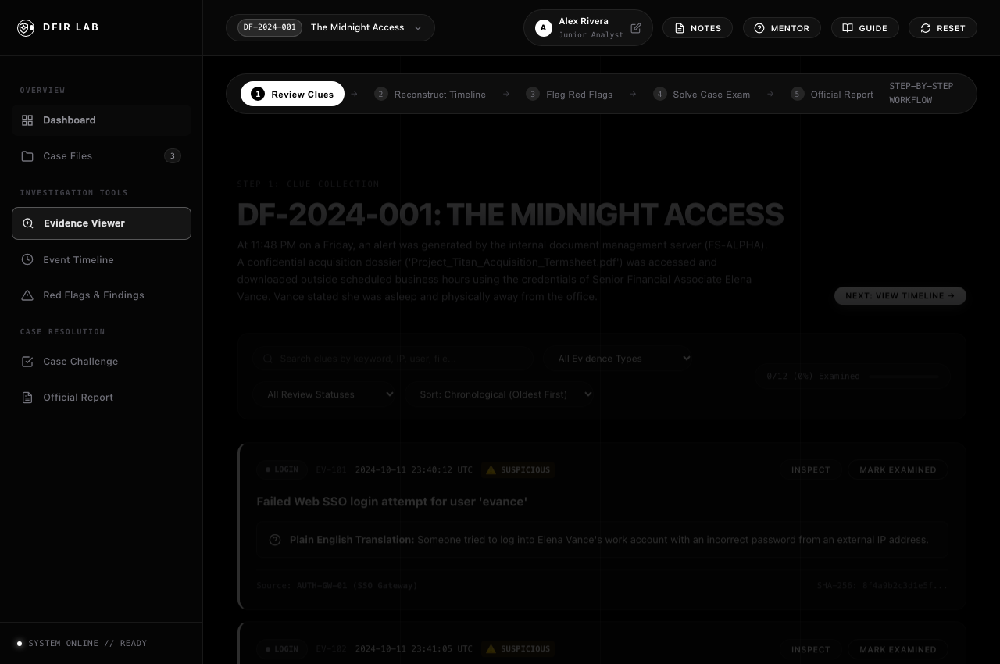
Fig. 7.3: Evidence Viewer with Plain-English Translation and SHA-256 Hash Display
Explanation: Each evidence card breaks down complex event IDs into understandable explanations while preserving raw log data and cryptographic checksums for forensic validity.
The Event Timeline module arranges disparate multi-source log records chronologically, enabling investigators to visually reconstruct the threat actor's trajectory across the enterprise infrastructure.
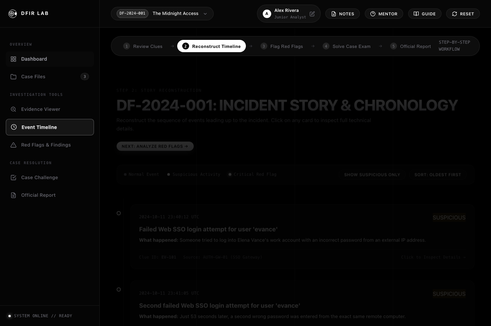
Fig. 7.4: Interactive Chronological Event Timeline with Anomaly Filters
Explanation: The timeline reveals how three consecutive authentication failures escalated into a successful session login, followed immediately by file access and anti-forensic log tampering.
The Findings Board provides a dedicated workspace where investigators can tag, review, and correlate observed technical red flags with specific forensic hypotheses.
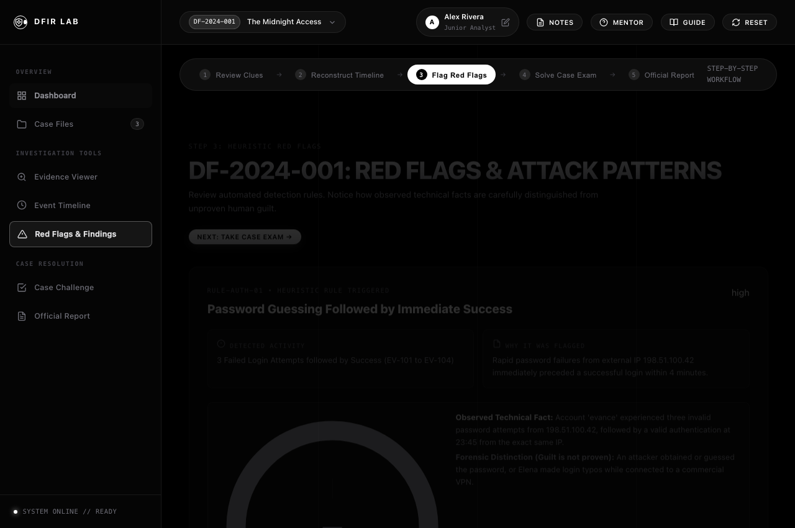
Fig. 7.5: Red Flags & Findings Board for IOC Analysis
Explanation: This interface reinforces the golden rule of forensics: distinguishing observed facts from speculative assumptions, and grouping confirmed indicators of compromise.
The Case Challenge module presents scenario-driven multiple-choice questions requiring the investigator to prove root-cause attribution, compromised accounts, and remediation priorities.
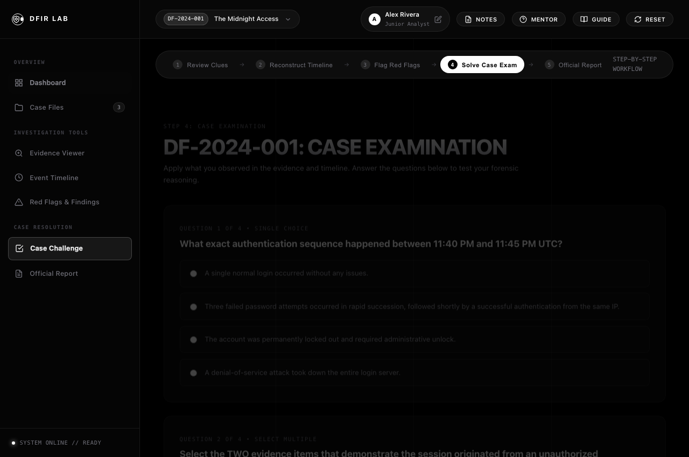
Fig. 7.6: Interactive Incident Response Challenge and Knowledge Verification
Explanation: Investigators test their findings against scientific criteria, receiving instant feedback, scoring breakdowns, and promotion toward higher examiner ranks.
Upon successful case resolution, the platform automatically synthesizes all verified facts into an executive Incident Investigation Report complete with digital signatures and remediation roadmaps.
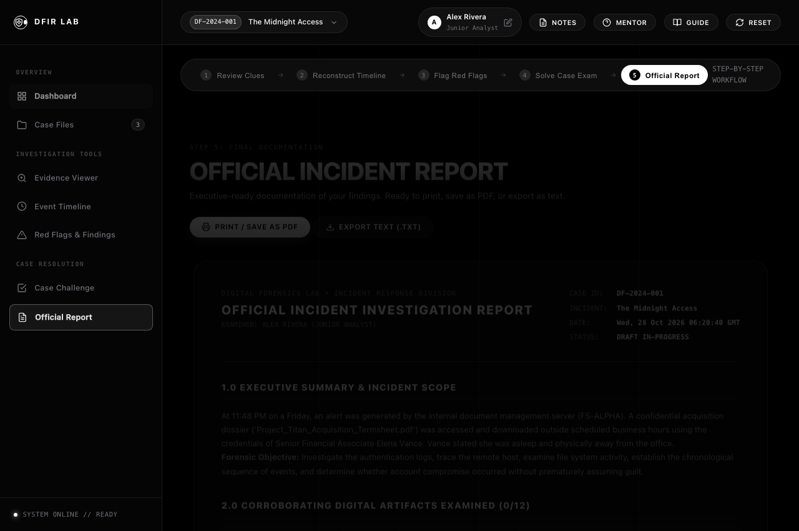
Fig. 7.7: Official Incident Investigation Report Generated by the Platform
Explanation: The generated report formats executive summaries, chronological findings, and recommended security controls into an audit-ready deliverable ready for export or printing.
The Digital Forensics Lab successfully fulfills the objective of creating an accessible, educational, and technically authentic cybersecurity simulation platform. By eliminating the heavy software installation requirements of traditional forensic training, the platform empowers students to conduct hands-on forensic investigations directly within a modern web browser.
Key outcomes realized by this project include:
The platform serves as an ideal pedagogical instrument for universities, cybersecurity training programs, and autonomous self-study, bridging the gap between abstract textbook security concepts and real-world incident response practice.
To build upon the foundations established in this mini-project, several avenues for future enhancement are planned:
.pcap packet captures alongside server logs.https://attack.mitre.org.https://www.w3.org/TR/WebCryptoAPI/.https://developer.mozilla.org.https://owasp.org.